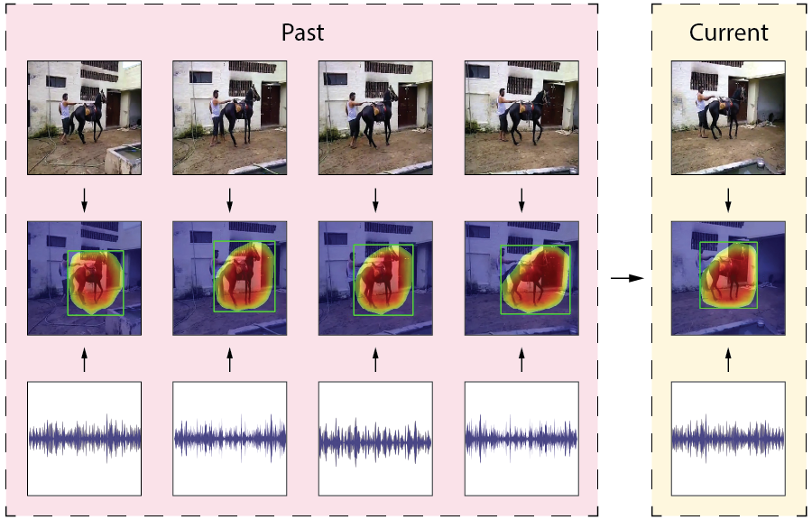

|
I am a visiting student at MIT working on robot learning under the supervision of Chuang Gan,
Tao Du, and Josh Tenenbaum.
I study how differentiable physics models can be leveraged for deformable object manipulations.
|
{kind=link}
|
Email: sizheli [at] mit.edu, sli96 [at] u.rochester.edu |
|
Sizhe Li*, Zhiao Huang*, Tao Du, Hao Su, Joshua B. Tenenbaum, Chuang Gan ICLR, 2022 (Spotlight, 5%) Differentiable physics solver often gets stuck when the initial contact points of the end effectors are sub-optimal or when performing multi-stage tasks that require contact point switching, which often leads to many local minima. To address this challenge, we propose a contact point discovery approach (CPDeform) that guides the stand-alone differentiable physics solver to deform various soft-body plasticines. |
|
|  |
Sizhe Li*, Yapeng Tian*, Chenliang Xu BMVC, 2021 Leveraging temporal synchronization and association within sight and sound is an essential step towards robust localization of sounding objects. To this end, we propose a space-time memory network for sounding object localization in videos. |

|
Sahar Shahamatdar*, Daryoush Saeed-Vafa*, Drew Linsley*, Sizhe Li, Sohini Ramachandran+, Thomas Serre+ NeurIPS2020 LMRL Workshop Molecular profiling of cancers is necessary to identify the optimal therapeutic options for patients. However, these assays are time-and-resource-intensive to perform, and they cannot accurately capture mutational heterogeneity. Here, we present a novel approach to address these issues. |

|
Ohad Kott*, Sizhe Li*, Drew Linsley, Ali Amin, Bora Golijanin, Dragan Golijanin, Thomas Serre, Boris Gershman The Journal of Urology, 2020 Deep learning has shown promising early results in the diagnosis and grading of prostate cancer. However, training such algorithms typically requires a large amount of manually annotated training data. To solve this issue, we developed a weakly supervised approach for the diagnosis and gleason grading of prostate core biopsies. |
|
University of Rochester:
|
|
Website template from Jon Barron. |